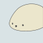

azarashi2931
About

- @azarashi2931, @azarashi_uni
- B3, College of Information Science, University of Tsukuba
- 学園祭実行委員会 情報メディアシステム局(OB), University of Tsukuba
Interests
- Computer
- Programmig Language
- Low Layer
- System Programmig
- Infra
Links
Works
Qualifications